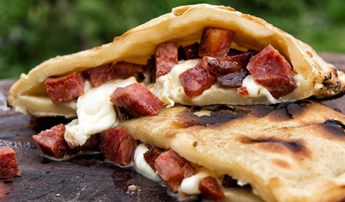
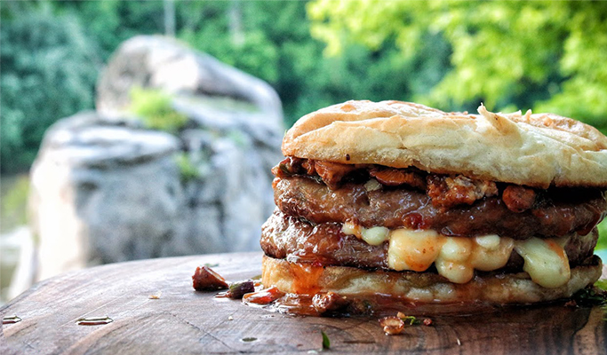
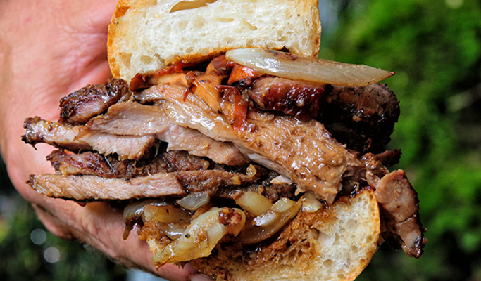

<!DOCTYPE html>
<html lang="en">
<head>
    <meta charset="UTF-8">
    <link href="css/recettes.css" rel="stylesheet" type="text/css" />
    <title>Recettes</title>
</head>
<body>
<header>
    
    <nav>
        <ul>
            <li><a href="#"></a><a href="#">Accueil</a></li>
            <li><a href="#">Présentation</a></li>
            <li><a class="t&a" href="#"> Trucs & Astuces</a></li>
            <li><a href="#">Recettes</a></li>
            <li><a href="#">Paysages</a><p id="paysage"></li>
        </ul>
    </nav>
</header>
<section class="burger">
    <h2>Burgers</h2>
      
    <div class="txtburgers">


      <h3>Burgers "qui nous est Comté"</h3>
        <p>Incroyable double cheesebruger  au Comté, tout cuit au feu!</p>

            <p class="ingredient">Ingrédients:</p>
           <li>Hamburger</li>
            <li>Un pain somon</li>
            <li>220g champignons</li>
            <li>50g de suif à l'agneau rôti</li>
            <li>100 g de fromage fait maison (50% de matières grasses)</li>
            <li>1 jeune oignon</li>
            <li>Poignée de thym frais</li>
            <li>Sauce chili douce</li>


        </div>
    
    <div class="txtburgers">
        <h3>Burger aux 3 harmonies</h3>
        <p> La technique de cuisson utilisée dans cette vidéo est quelque chose que vous n'avez pas encore vu (nous vous le promettons!)! C'est notre sandwich triple spécial, fumé, croustillant, juteux, charnu, délicieux, mais très simple. Cette fois, nous avons un invité spécial pour nous aider ...</p>

            <p class="ingredient"> Ingrédients:</p>
            <li>500 g de saucisses maison</li>
            <li>1 pain somon</li>
            <li>150g de yogourt grec</li>
            <li>Poignée de persil frais</li>
            <li>Huile, sel, poivre noir</li>
    </div>
    
    <div class="txtburgers">
        <h3>Burger mère nature</h3>
        <p>Quelques oignons naturels caramélisés avec du miel frais pour la douceur, vinaigre balsamique superbe pour les notes acidulées, sauce mayonnaise maison pour la fraîcheur rendent ce hamburger incroyable vraiment savoureux. </p>
        <p class="ingredient">Ingrédients: </p>

        <li>700 g de buffle à l'épi</li>
        <li>400g d'oignons biologiques</li>
       <li> 2 cuillères à soupe de lard d'agneau</li>
        <li>1 cuillère à soupe de miel frais</li>
       <li> 70g de fromage chaud fait maison</li>
        <li>70g de bacon fumé maison</li>
       <li> 1 pain somon</li>
       <li> Vinaigre balsamique</li>
       <li> Mayonnaise maison aux herbes</li>


    </div>


</section>
<h2>Les sandwichs "pleine nature"</h2>
<section class="sandwichs">
    
    <div class="txtburgers">
        <h3>Sandwich sauvage</h3>
        <p>Mr.Ramsay le hibou est de retour et cette fois, il nous a défié de faire meilleur sandwich de porc ! Une dose triple de poivre de sichuan extra chaud et de piment rouge rôti a fait flamber épicé, sans aucun doute, ce sandwich est un tueur absolu !
        </p>

        <p class="ingredient">Ingrédients</p>
        <li>200 à 500 g de cou de porc</li>
        <li>1 Oignon,Ail, romarin</li>
        <li>1 Piment rouge lactarius volemus</li>
       <li>2-4 c. à café de Sauce soja légère</li>
        <li>1 Rouge sichuan poivre </li>
        <li>1 pain somone</li>
        <li>Sel, huile d'olive</li>
    </div>
    
    <div class="txtburgers">
        <h3>Sandwich aux dés de sanglier</h3>
        <p>Calzone simple mais délicieux avec kulen maison et fromage blanc! </p>
        <p class="ingredient">Ingrédients</p>
        <li>1 pâte à pizza</li>
        <li>150g maison kulen</li>
        <li>150g de fromage blanc maison</li>
        <li>1 Blanc d'œuf  battu</li>

        </div>


</section>

</body>
</html>